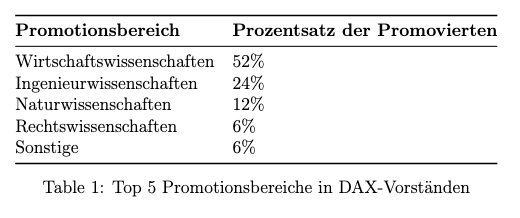

Lohnt sich ein Doktortitel?
Abstract
Ein Doktorabschluss wird oft als Zeichen akademischer Exzellenz betrachtet und eröffnet Karrierechancen in Forschung, Lehre und Führungspositionen. Doch wie viele Menschen in Deutschland verfolgen eine Promotion? Wie verbreitet sind Promotionen unter den Führungskräften großer Unternehmen, insbesondere in DAX-Vorständen? Dieser Artikel analysiert die Datenlage und gibt Einblicke, in welchen Bereichen sich eine Promotion besonders lohntEinleitung
Ein Doktorabschluss ist die höchste akademische Qualifikation, die an Universitäten erworben werden kann. Er ist ein Zeichen für Forschungsfähigkeit und vertieftes Wissen in einem bestimmten Fachbereich. Doch stellt sich die Frage: Ist ein Doktortitel angesichts des Zeitaufwands und der hohen Anforderungen noch relevant?Promotionszahlen in Deutschland
Laut aktuellen Daten befinden sich etwa 204.900 Personen in Deutschland in einem Promotionsverfahren. Jährlich werden rund 27.000 bis 30.000 Promotionen abgeschlossen, was etwa 1,5% der Gesamtbevölkerung betrifft [1]. Die häufigsten Promotionsbereiche sind Humanmedizin und Gesundheitswissenschaften (27%), gefolgt von Mathematik und Naturwissenschaften (23%) sowie den Ingenieurwissenschaften (19%).Doktorgrade in der Wirtschaft
In den Vorständen der DAX-Unternehmen zeigt sich, dass 33% der Mitglieder promoviert sind. Besonders Wirtschafts-, Ingenieur- und Naturwissenschaften dominieren bei den Promotionsfächern. Die folgende Tabelle zeigt die Top 5 Promotionsbereiche in den Vorständen [2]:
Masterabschlüsse in den Vorständen
83% der DAX-Vorstandsmitglieder haben einen Masterabschluss, häufig in wirtschaftswissenschaftlichen Fächern wie Betriebswirtschaftslehre (BWL) und Volkswirtschaftslehre (VWL). Dies verdeutlicht die Bedeutung eines weiterführenden Studiums für Führungspositionen [3].Diskussion
Ein Doktorabschluss kann insbesondere in bestimmten Bereichen wie den Wirtschafts- und Ingenieurwissenschaften eine wichtige Rolle für den beruflichen Aufstieg spielen. Allerdings ist festzustellen, dass ein hoher Bildungsabschluss allein keine Garantie für eine Führungsposition darstellt. Praktische Erfahrungen, wie etwa eine Beratungstätigkeit, sind ebenso entscheidend.Fazit
Eine Promotion ist in Deutschland nach wie vor ein prestigeträchtiger Titel und eröffnet Chancen in Wissenschaft und Wirtschaft. Ob sich der Aufwand lohnt, hängt stark vom angestrebten Karriereweg und der Fachrichtung ab. Wer eine Führungsposition in der Wirtschaft anstrebt, sollte neben einer möglichen Promotion auch praxisnahe Qualifikationen wie einen MBA in Betracht ziehen.Referenzen
[1]Statistisches Bundesamt, “Promotionsstatistiken 2023”, https://www.destatis.de
[2]Finanzen.net, “Akademische Hintergründe der DAX-Vorstände”, Oktober 2023, https://www.finanzen.net
[3] WiWi-Treff, “Hintergründe der DAX-CEOs”, 2024, https://www.wiwi-treff.de.